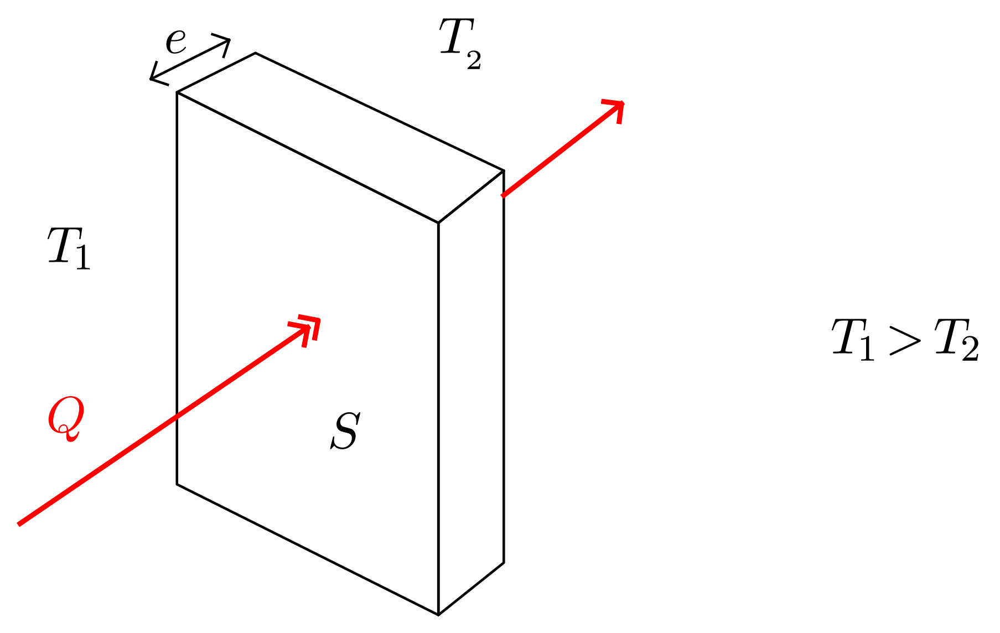

À maîtriser avant le début de ce cours : Travail, Force conservative, Force non conservative, Énergie potentielle d’interaction, Énergie cinétique, Énergie mécanique.
À la recherche d’une grandeur énergétique conservative
Les grandeurs conservatives sont très importantes en physique, leur utilisation permet souvent de comprendre simplement l’évolution des systèmes.

- Démontrer que l’énergie mécanique n’est pas une grandeur conservative.
Réponse
Dans le référentiel du laboratoire, $E_M (t = 0) = \dfrac{1}{2} m\, v_0^2 + E_{PP}$ et $E_M (t_{\infty}) = E_{PP}$. Donc $\Delta E_M = E_M (t_{\infty}) - E_M(t = 0) = - \dfrac{1}{2}\, m\, v_0^2 < 0$.
L’énergie mécanique n’est pas conservée bien que le système {masse + Terre} soit isolé, $E_M$ n’est pas une grandeur conservative !
- Donner l’expression de la force de frottements solides (force non conservative constante).
Réponse
$\Delta E_M = E_M (t_{\infty}) - E_M(t = 0) = W(\vec{f}) = \vec{f} \cdot \overrightarrow{AB}$ donc $- \dfrac{1}{2}\, m\, v_0^2 = -f \cdot d$ où $d = \Vert \overrightarrow{AB} \Vert$. Finalement $$ f = \dfrac{1}{2}\, \dfrac{m\, v_0^2}{d} $$
Que devient l’énergie mécanique qui disparait lorsque des forces non conservatives travaillent ?
Lorsque l’expérience précédente est réalisée, on constate que les températures de la masse $m$ et de la Terre augmentent. Il est donc nécessaire d’introduire dans le raisonnement un terme qui prend en compte les processus qui peuvent intervenir au niveau microscopique ; on appelle cette grandeur l'énergie interne $U$ du système (unité : joule).
- Reprendre le bilan d’énergie de la question 1. en n’utilisant pas l’énergie mécanique $E_M$ du système mais son énergie totale qui a pour expression $E_t = E_M + U$.
Réponse
Si on note $E_t$ l’énergie totale du système, $U_1$ l’énergie interne de la masse $m$ et $U_2$ l’énergie interne de la Terre,
$E_t (t = 0) = E_M (t = 0) + U_1 (t = 0) + U_2 (t = 0)$ et $E_t (t_{\infty}) = E_M(t_{\infty}) + U_1 (t_{\infty}) + U_2 (t_{\infty})$.
Donc
$\Delta E_t = \Delta E_M + \Delta U_1 + \Delta U_2 = 0$ (puisque l’ensemble est isolé et que l’énergie se conserve).
Finalement
$$\Delta U_1 + \Delta U_2 = - \Delta E_M$$
L’énergie mécanique qui a disparu est s’est transformée en énergie interne.
L’introduction de l’énergie interne $U$ est nécessaire car l’énergie mécanique $E_M$ ne prend en compte ni les mouvements internes des atomes et des molécules, ni les forces d’interaction s’exerçant entre ceux-ci (ou celles-ci).
Les forces dissipatives (de frottements) correspondent à une description macroscopiques. Au niveau microscopique, il n’existe pas de force dissipative, il n’existe que des forces conservatives.
Énergie interne
L’énergie interne d’un système thermodynamique est l’énergie qu’il renferme.
Elle est égale à la somme de l’énergie cinétique de chaque entité élémentaire de masse non nulle (agitation thermique) et de toutes les énergies potentielles d’interaction des entités élémentaires de ce système (liaisons chimiques, nucléaires, interactions électriques entre molécules (ou ions), etc.). En fait, elle correspond à l’énergie intrinsèque du système, définie à l'échelle microscopique, à l'exclusion de l’énergie cinétique ou potentielle d’interaction du système avec son environnement, à l’échelle macroscopique.
$$U = \sum E_{C,micro} + \sum E_{P,micro}$$
L’énergie interne est une fonction d’état du système : sa variation ne dépend que de l’état final et de l’état initial d’équilibre et non pas de la nature de la transformation.
- Remarque
- Il faut garder à l’esprit que les composants d’un système sont toujours en mouvement au niveau microscopique, même si le système est macroscopiquement au repos.
- Rappel : passage du microscopique au macroscopique
- La grandeur qui relie le monde microscopique au monde macroscopique est la constante d’avogadro : $$\mathcal{N}_A = \pu{6,02e23 mol-1}$$
Énergie totale d’un système thermodynamique
Remarque: Seules les variations de l’énergie totale d’un système ont un sens physique.
Comment varie l’énergie totale $E_t$ d’un système lorsqu’il n’est pas isolé ?
Différents types de transferts d’énergie
- Comment appelle-t-on le transfert d’énergie reçu par le gaz ?
Réponse
Le point d’application de la force pressante se déplace, cette dernière transfère donc de l’énergie par travail au système.
- Comment appelle-t-on le transfert d’énergie reçu par le gaz ?
Réponse
L’énergie de ce système varie (la température s’élève) mais aucune force ne voit son point d’application se déplacer ! On appelle chaleur (ou transfert thermique) $Q$ le transfert d’énergie autre que le travail.
Premier principe de la thermodynamique
Capacité thermique d’un système incompressible
On appelle capacité thermique, l’énergie thermique qu’il faut fournir à un système qui ne reçoit aucun travail, dans des conditions et une température données, pour élever sa température de 1 °C (ou 1K).
Si le système est incompressible, $$C = \dfrac{\Delta U}{\Delta T}$$
Unité : Joule par kelvin ou joule par degré celsius, $\pu{J.K-1}$.
La capacité thermique des solides et des liquides (phases condensées) dépend assez peu des conditions expérimentales.
Si on introduit la capacité thermique massique $c = C / m$ où $m$ est la masse du système :
$$ \Delta U = m\, c\, \Delta T = m\, c\, (T_f - T_i) = W \left( \text{forces non conservatives} \right) + Q $$
Unité de la capacité thermique massique : joule par kelvin et par kg, $\pu{J.K-1.kg-1}$).
Transferts thermiques
Différents transferts thermiques
Un transfert thermique peut s’effectuer selon plusieurs modes :
- Conduction
-
L’agitation thermique se transmet de proche en proche dans la matière, sans que celle-ci se déplace macroscopiquement.
- Convection
-
L’agitation thermique se transmet de proche en proche dans la matière, avec un déplacement d’ensemble de celle-ci.
- Rayonnement
-
L’absorption ou l’émission d’un rayonnement modifie l’agitation thermique. Ce mode de transfert ne nécessité pas la présence d’un milieu et peut s’effectuer dans le vide.
Les transferts d’énergie d’origine thermique (la chaleur) se font spontanément toujours du corps de température la plus élevée (corps « chaud ») vers le corps de température la plus basse (corps « froid ») ; jamais dans l’autre sens. L’échange d’énergie est donc irréversible.
Fondamentalement, cette irréversibilité a pour source le comportement de la nature à l’échelle microscopique : le désordre au niveau microscopique a une tendance naturelle à toujours augmenter, jamais à diminuer (si on considère les systèmes dans leur ensemble).
Flux et résistance thermique
On appelle flux thermique l’énergie thermique transférée à travers une paroi par unité de temps.
Ce transfert s’effectue toujours depuis le côté de la paroi dont la température est la plus élevée vers le côté de la paroi dont la température est la plus basse.
$$\varphi = \frac{Q}{\Delta t}$$
Unité : joule par seconde, soit watt.

Si les températures $T_1$ et $T_2$ sont constantes, on peut montrer que le flux thermique est proportionnel à la différence de ces températures $\Delta T = T_1 - T_2$ : $$ \varphi = \dfrac{\Delta T}{R_{\text{th}}} $$ $R_{\text{th}}$, par analogie avec l’électrocinétique, est appelée **résistance thermique du matériau** qui constitue la paroi et a pour expression $$ R_{\text{th}} = \dfrac{e}{S \lambda} $$ où $e$ est l’épaisseur de la paroi, $S$ sa surface et $\lambda$ une constante *caractéristique du matériau*.
*Unité de $R_{\text{th}}$ :* kelvin seconde par joule, soit kelvin par watt.
Exercices
Température de contact
Différents corps placés longtemps au contact Ies uns des autres, finissent par atteindre un état d’équilibre thermique caractérisé par une même température $T_e$.
Pourtant, lorsque l’on touche un objet en marbre ou un objet en bois placés tous deux depuis longtemps dans une même pièce, la sensation est différente : sensation de froid dans le cas du marbre qui n’existe pas pour le contact avec le bois.
-
Si un thermomètre placé dans une pièce indique depuis longtemps $\pu{18 °C}$, quelles sont les températures des objets en marbre et en bois évoqués ci-dessus ? Quelle est la température du corps humain ? Dans quel sens a lieu l’échange de chaleur lors du contact du doigt avec un objet ?
-
Expliquer qualitativement pourquoi une pièce de métal paraît plus froide au contact qu’un objet en bois.
Thermostat
Détermination de la capacité thermique massique d’un solide
-
Un calorimètre contient $m_1 = \pu{95 g}$ d’eau à $\theta_1 = \pu{20 °C}$. On ajoute $m_2 = \pu{71 g}$ d’eau à $\theta_2 = \pu{50 °C}$. Quelle est la température d’équilibre $\theta_e$ ?
Remarque : on néglige la capacité thermique du vase et de ses accessoires. -
Le même calorimètre contient maintenant $m'_1 = \pu{100 g}$ d’eau à $\theta'_1 = \pu{15 °C}$. On y plonge un échantillon métallique de masse $m = \pu{25 g}$ sortant d’une étuve à $\theta'_2 = \pu{95 °C}$. La température d’équilibre est $\theta = \pu{16,7 °C}$. Calculer la capacité thermique massique $c$ du métal.
La capacité thermique massique de l’eau est $c_0 = \pu{4,18 J.g-1.K-1}$.
Équivalence travail - chaleur
Une auto de masse $M = \pu{836 kg}$ roule à la vitesse $v = \pu{20 m.s-1}$ (72 km/h) et s’arrête brusquement à l’aide de ses quatre freins à disques. En assimilant ces derniers à des cylindres de rayon $R = \pu{10 cm}$, d’épaisseur $e = \pu{1 cm}$, de masse volumique $\rho = \pu{8 g.cm-3}$ et de capacité thermique massique $c = \pu{0,42 J.g-1.K-1}$, calculer leur élévation de température en supposant que toute l’énergie thermique est absorbée par les disques.
Échauffement d’une bille en mouvement dans l’air
Une bille métallique, de capacité thermique massique $c$ (supposée constante),est lancée vers le haut avec une vitesse $v_0$, dans le champ de pesanteur $\vec{g}$ supposé uniforme. Elle atteint une altitude $h$, puis redescend.
-
Déterminer l’altitude maximale $h_0$ atteinte par la bille si on néglige les forces de frottement fluide entre l’air et la bille.
Exprimer $h$ en fonction de $v_0$ et $g$. -
On constate que l’altitude réelle $h$ est inférieure à $h_0$, à cause des forces de frottement.
Exprimer la variation de température $\Delta T$ de cette bille entre l’instant où elle est lancée et l’instant où elle atteint son point le plus haut en supposant que :- l’on néglige toute variation de volume de la bille ;
- l’air ambiant reste macroscopiquement au repos ;
- le travail des forces de frottement se dissipe pour moitié dans l’air ambiant et pour moitié dans la bille. Exprimer $\Delta T$ en fonction de $h_0$, $h$, $g$ et $c$.
-
Calculer $h_0$, puis $\Delta T$.
Données : $g = \pu{9,81 m.s-2}$ ; $c = \pu{0,4 kJ.kg-1}$ ; $v_0 = \pu{10 m.s-1}$ ; $h=\pu{5 m}$.